Our School , Our Community.
Summary
The education landscape is constantly changing with the introduction of new technologies and methodologies. However, there are no major change to school design in the past century. Is the traditional school layout able to fit into today's new education trend? On the other hand, Singapore is also facing the problems of falling birth rate and aging population. Schools are merging, but there is an increase in demand on life-long learning for elderly. It is interesting to explore the idea of designing new school space to provide lessons to two different target groups. Thus, this thesis aims to propose a new architectural insertion to promote the interaction between students and elderly in the ‘school + community centre’ setting.About Me
Wentao is master graduate from SUTD ASD. He is a self-motivated architecture student who is passionate in design. Fluent in various modeling and design software like Rhino, Sketchup, Adobe Photoshop, Illustrator, InDesign etc. He was interning in various organizations such as: Student intern at former LTA Active Mobility Unit Planning Division, Architectural design intern at MKPL Architects and Aedas.Name
Zhu Wentao
Mentor
Yeo Kang Shua
Typology
Education, Community
Site Location
Singapore

![]()
![]()
![]()
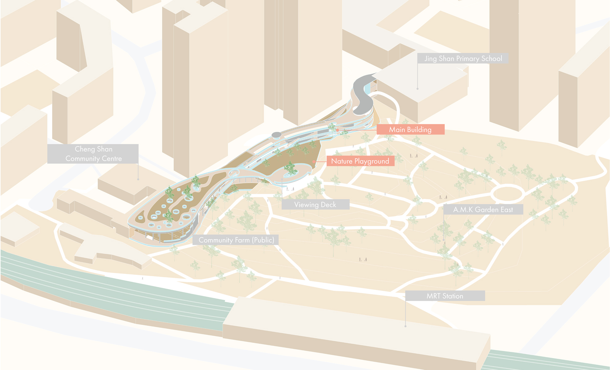
Massing Development & Programmes Arrangement
The form development process is mainly shaped by existing contour and circulation condition and the create more interaction with the park by shifting floor plats towards the park. Other than that, I also rearranged programmes in school and CC in terms of flexibility, whether can be co-use with the public and the level of attraction to identify the suitable programmes in this community school. Six programmes are selected to put in this new building (Community Centre, Elderly Centre, Elderly Wellness Centre, Canteen, Library and community corner). Normally we will arrange similar programmes to near school and CC. Yet, I interchanged the location of these programmes to create a common interaction zone in-between.Programmes & Circulation (Elderly/Children/Public)
Here is the exploded axonometric for programme allocation. Ground level focuses more on food and care, L2 focus on learn and play, L3 which is the park level, it focuses on nature & read. L4 will be the farmland for the school and public.Kids oriented programs and suggested circulation are indicated in orange colour. There isn’t a fixed circulation routes for each target group. This circulation is just to propose a fastest way travel from the school to canteen area. This programmes arrangement also encourage kids to exercise through walking. Elderly’s programmes and circulations are indicated in red. Circulation for elderly are more direct, vertical access are available in this building, elderly can also encourage to climb the stair, staircase location is also designed to locate near to elderly related facilities. The community school can also open to public during weekend, holiday and emergency. Special partition wall system can be used as space divided at various key junctions when the building to open for different purposes.
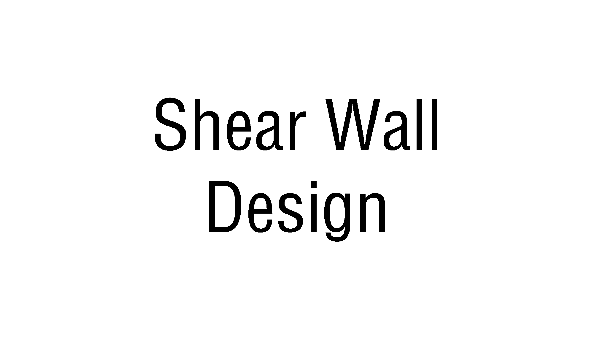
Design Considerations
Four design considerations are generated based on all these researches for my design, which are multi-function space, ventilation-oriented design, creative use of universal design and ensure the safety for the users. These are reflected through different shear wall design in the building and the cubic movable furniture system designed by me. Also, providing a more outdoor oriented building environment to ensure ventilation and the use of different floor materials to create different sound and feel as a new way of way finding. Shifting the way finding signs from ceiling to wall for easy reading. Safety as top priority, the gap between retaining wall and building create a barrier for people to climb over, but maintaining an unobstructed park view from the building side. Only visual interaction between the public and students. And the introduction of multiple emergency access at L1.
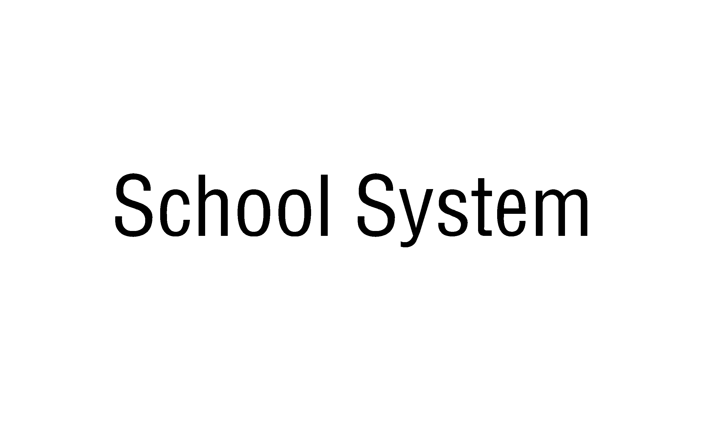
How this community school works?
My design aims to provide more learning opportunities for elderly , and promote the interaction between my two target groups. Young children and elderly are both the student population and they are both care-taker and care giver in this school environment. Thus, this community school frame work will follow two system, one will be the basic facilities at L1 as the attractor programmes for people to use here, the interaction level is only co-share(share the same building). The second system will be the school system which works will the existing school and community centre programmes and even provide something new for these two target groups. In the second system, my design objective will be able to be achieved. Here are the typical timetable of a primary school student, under the working with existing programme framework, the highlighted lesson can then use the community school facilities, or elderly can also join these classes like CCA etc. The interaction is raised up to co-use level.Under the providing new learning opportunity, the highlighted class can be changed to suit today’s new education trend with more self-study time for web class, elderly’s involvement as tutor, and how introduction new class like volunteering and farm to develop new skills and young children’s character development.
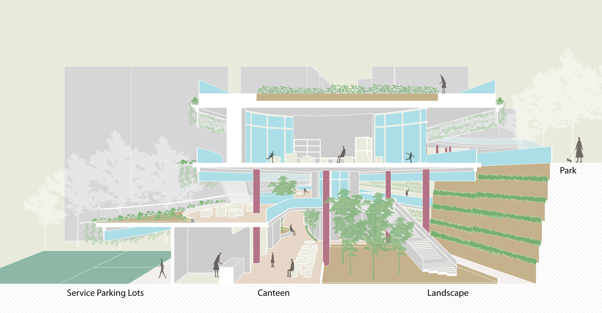
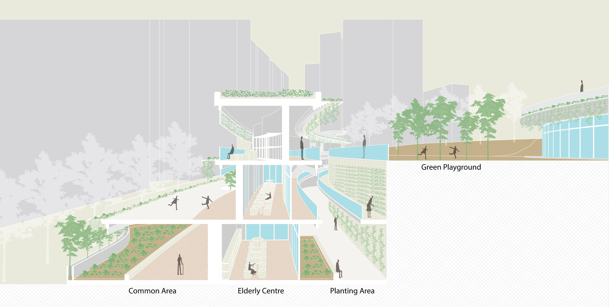
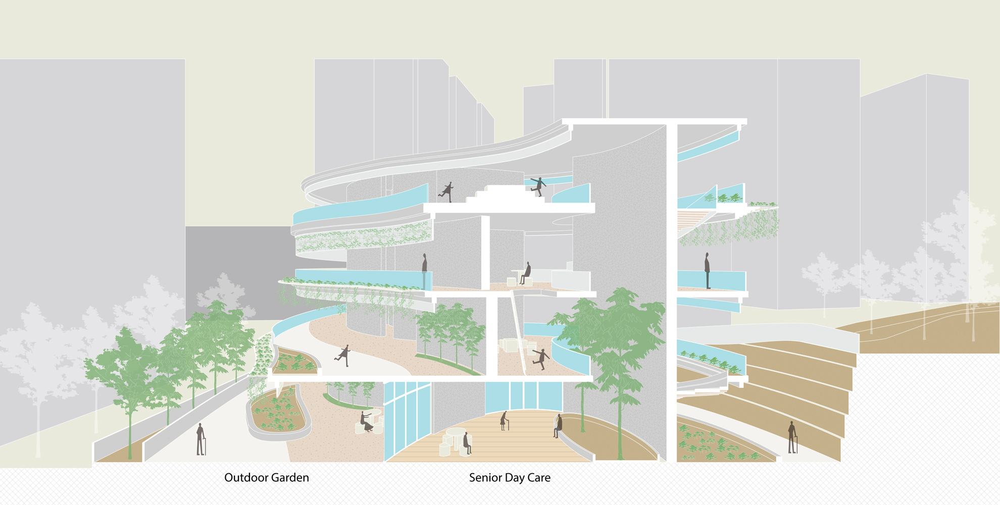

 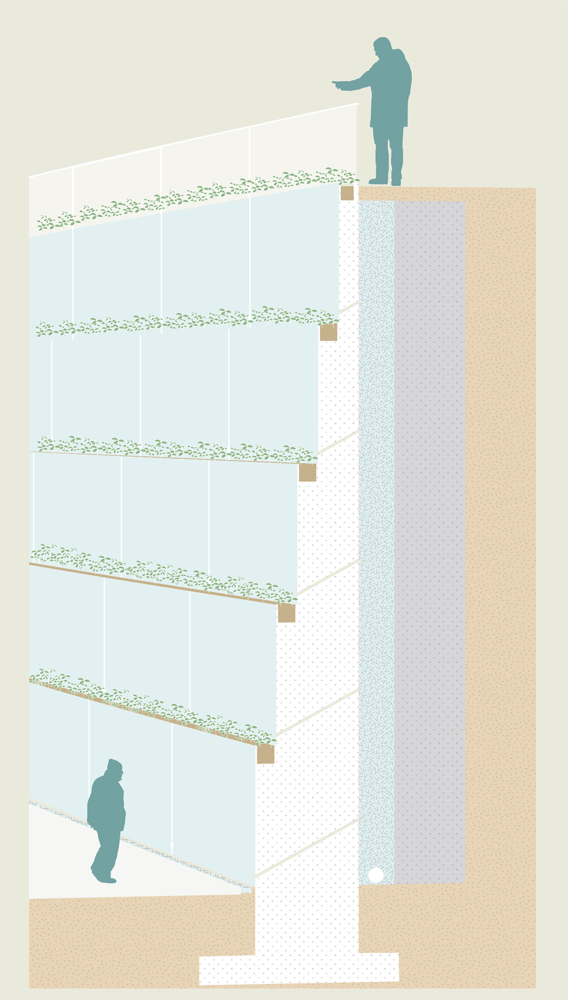
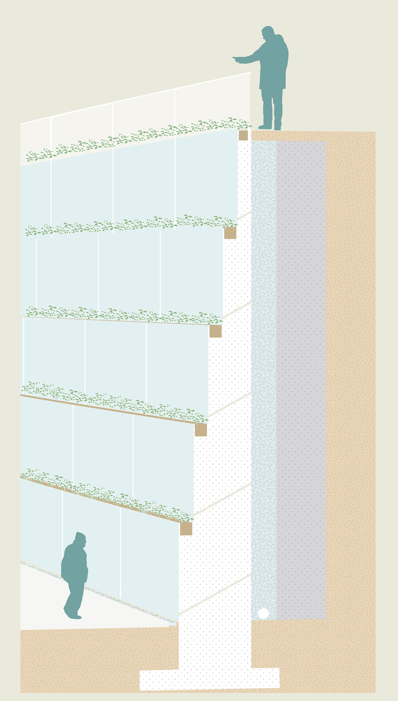
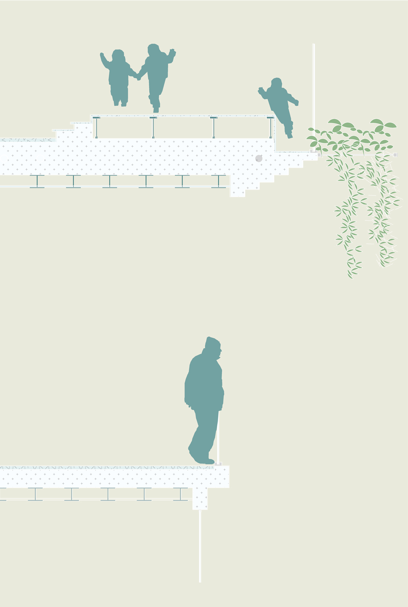
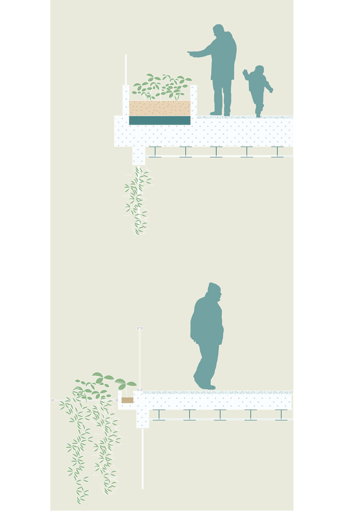
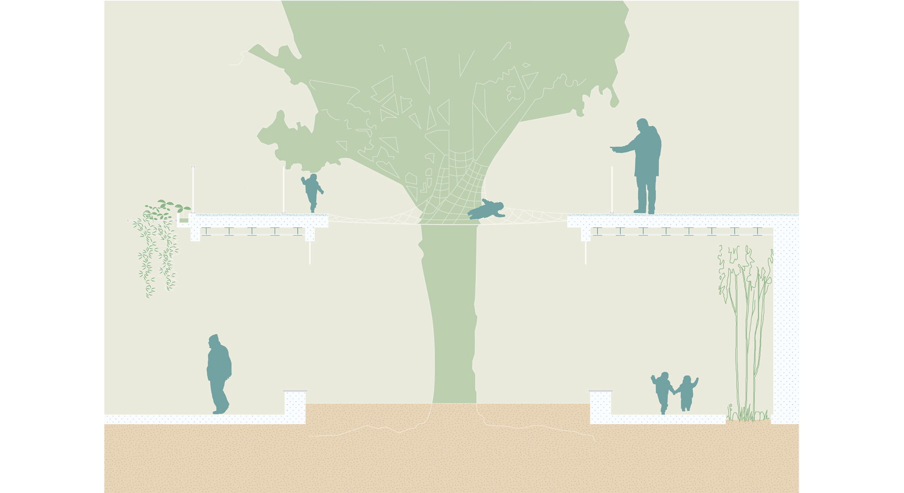
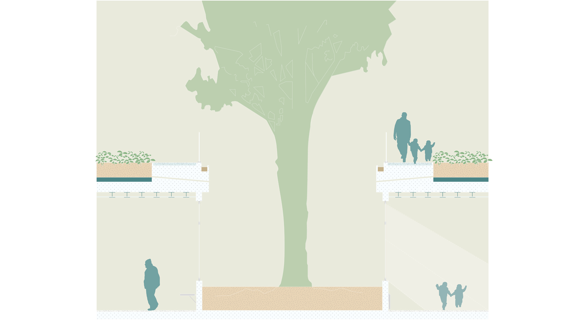